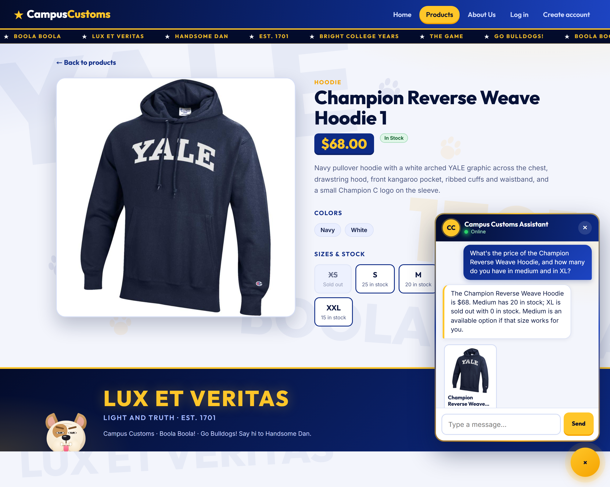
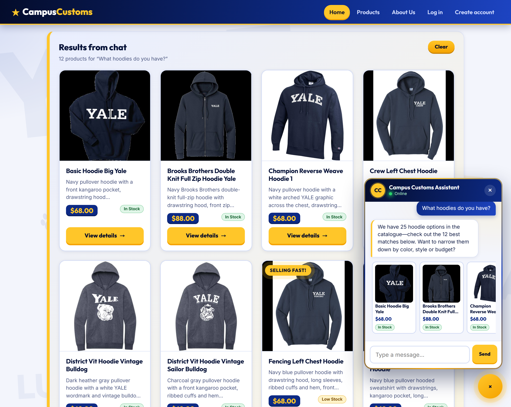
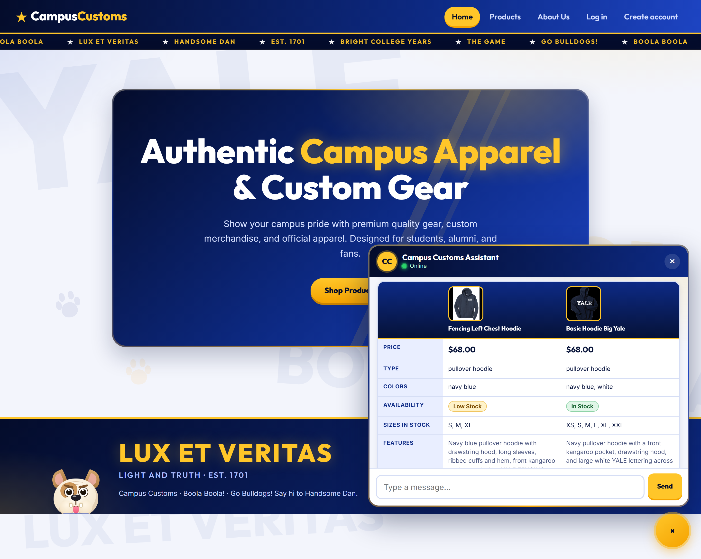

Campus Customs – App Check
Screenshots of the running site (React frontend + FastAPI backend + SQLite database) with the chat assistant answering real questions.
1. Chat checks inventory levels and prices from the database

Asked about the Champion Reverse Weave Hoodie, the assistant answers $68, 20 in medium and XL sold out (0). These match the database, and the page's own size tile for M also reads 20 in stock.
2. Category question shows dynamic product cards

After "What hoodies do you have?", the chat replies and the page fills with a "Results from chat" grid of 12 hoodie cards (also shown as compact cards in the chat). Each card shows the price and a stock badge pulled from the database.
3. Usability feature: side-by-side comparison table with stock badges

Asking to compare two hoodies returns a table with price, type, colors, sizes in stock and features in one view. The availability row uses visual stock badges: Low Stock for the Fencing Left Chest Hoodie and In Stock for the Basic Hoodie Big Yale.